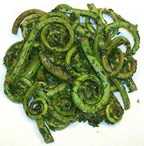

|
Fern Fiddleheads with HerbsCalifornia | ||||
| Serves: Effort: Sched: DoAhead: |
2 side ** 20 min No |
The basic recipe closely follows one published by the Los Angeles Times test kitchen. My pasta variation makes more efficient use of an expensive ingredient. | |||
|
12 1 1 1 tt |
oz T T T T |
Fiddleheads (1) Butter or Olive Oil Parsley Chives Salt & Pepper |
Make: - (20 min)
|
| Now lets stretch those expensive fiddleheads. | ||||
|
|
1/2 3 3 3 tt 12 |
# T T T T oz |
Fiddleheads Butter or Olive Oil Parsley Chives Salt & Pepper Pasta (2) |
Make: - (25 min)
|